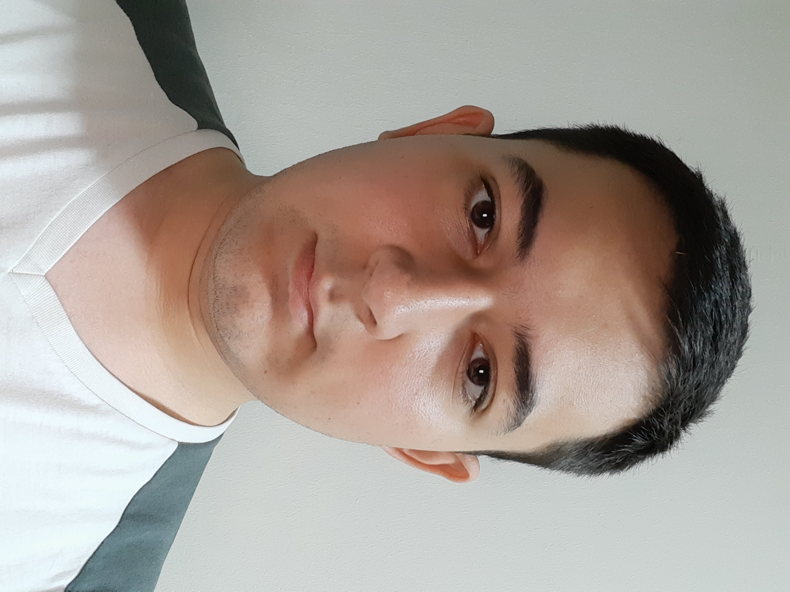
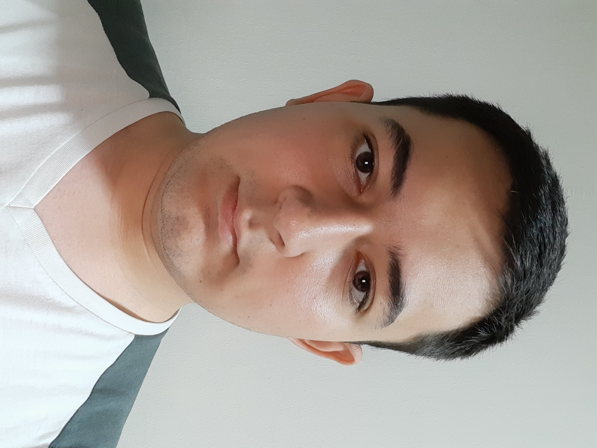

Hello,I'm Ömer
Frontend Developer
I have been dealing with web design for about a year and I am constantly trying to improve myself on this subject.
Frontend Developer
I have been dealing with web design for about a year and I am constantly trying to improve myself on this subject.
Hello.My name is Ömer Söyleyen.I'm 19 years old.I was living Eskişehir with my family before graduating from university.But after graduating from university, most of the year was spentliving in Konya or dorm itory.When there is no school, I usually go to my family.By the way, I am currently a 2nd year Computer Engineering student at Konya Technical University.Outside of university, I am constantly trying to impr ove myself academically.